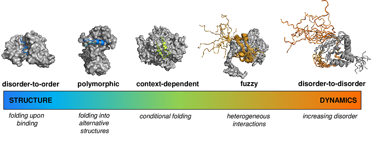
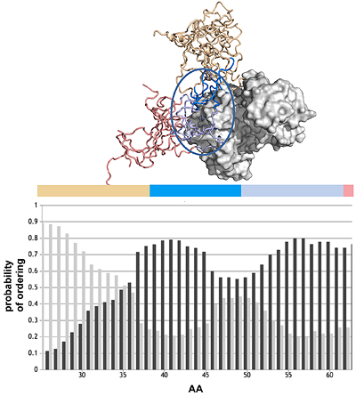
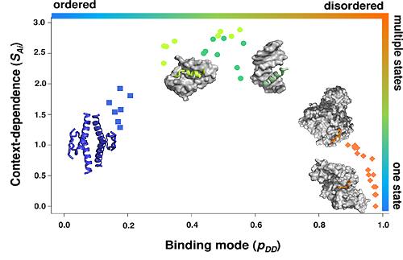
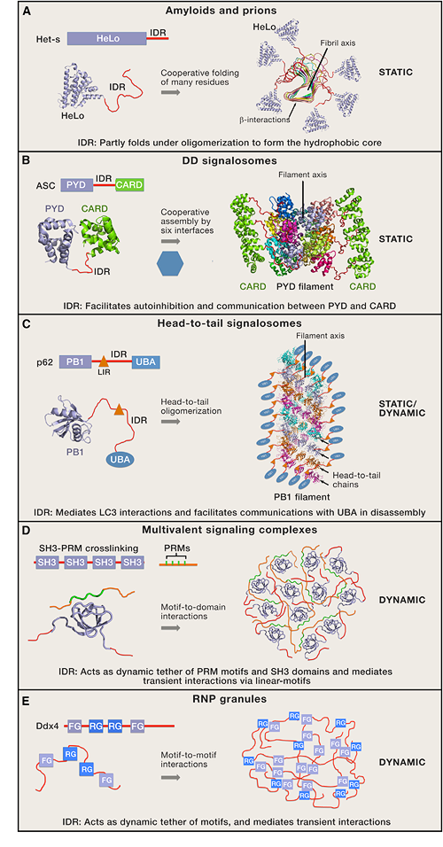

|
|
|
Fuzzy protein interactions
Cellular processes adapt to the environmental conditions, so as protein interactions adapt to the cellular context. Similarly to conformational ensembles of protein structures, the bound state of proteins must also be represented by an ensemble of bound conformations, which in addition to structural variations often involves variations in contact patterns. Therefore, a specific partnership can be defined by a set of interactions, out of which the populations most suitable to the cellular conditions are selected. Fuzzy interactions depend on the context, such as tissue, cellular localisation, developmental stage, local composition of the compartment, ion concentration, posttranslational modifications, solvent, and change accordingly. Context-dependent activities cannot be described by deterministic structure-function relationships.

P. Tompa and M Fuxreiter (2008) Fuzzy complexes: polymorphism and structural disorder in protein–protein interactions. Trends in Biochem. Sci 33, 2-8
Fuxreiter M (2018) Fuzziness in protein interactions - A historical perspective. J. Mol. Biol. 430, 2278-2287.
Fuxreiter M (2018) Towards a stochastic paradigm: from fuzzy ensembles to cellular functions. Molecules 23, E3008. doi: 10.3390/molecules23113008
M Fuxreiter (2012) Fuzziness: linking regulation to protein dynamics. Mol Biosystems 8, 168-177.
Prediction of fuzzy interactions
As proteins may populate ordered and disordered states to different extents depending on their partners and cellular conditions, we aim to simultaneously estimate the probability of the folding upon binding (disorder-to- order transition), and the probability that the interacting proteins remain disordered in their bound states (disorder-to-disorder transitions). We have developed the FuzPred method, a sequence-based prediction algorithm to estimate the probabilities of different binding modes using a dataset representing 2157 complexes. We found that fuzzy interactions originate from local sequence compositions, lacking the bias for ordered bound states. We demonstrated that the amino acid sequences of proteins can encode a wide range of conformational changes upon binding, including transitions from disordered to ordered and from disordered to disordered states, which can thus be predicted without specifying the binding partners.
M. Miskei, A Horvath, M. Vendruscolo, M Fuxreiter (2020) Sequence-Based Prediction of Fuzzy Protein Interactions J. Mol. Biol. 432, 2289-2303
Binding mode landscapes
It has been increasingly recognised that proteins may sample both ordered and disordered binding modes in their specific assemblies, and can change binding mode according to the cellular context. We have demonstrated that binding mode variability or promiscuity is also encoded in the sequence. As illustrated by the p53 tumor suppressor, the C-terminal peptides exhibit strong preference for disordered binding modes, the oligomerisation domain for ordered binding modes with structural polymorphism, whereas the mdm2 and dna recognition sites are inducible and only adopt folded structures with their specific partners or under a particular context. Therefore, when aim to predict interactions from sequence, we need to estimate the interaction behavior, which characterises both the binding mode, whether the regions is structured or disordered in the complex, and the variability of such binding mode, termed as the binding mode entropy.
A. Horvath, M. Miskei, V. Ambrus, M. Vendruscolo, M Fuxreiter (2020) Sequence-based prediction of protein binding mode landscapes. PLoS Comp Biol 16, e1007864
Fuzzy protein interactions in higher-order structures
Fuzzy interactions are critical to regulated formation of higher-order structures ranging from solid-like amyloids to liquid-like ribonucleoprotein granules. All higher-order assemblies, even the most static ones, exhibit structural multiplicity, polymorphism, and/or dynamic disorder and can be considered as fuzzy structures. In the case of static polymorphism, alternative conformations of the same interacting elements are stabilized within the assembly. In the case of dynamic disorder, the disordered regions retain conformational freedom within the assembly and will be referred to as fuzzy regions. These dynamic disordered regions within higher-order structures may link separate binding modules to increase their local concentration, exert transient interactions to influence adjacent binding elements, facilitate allostery, or promote intramolecular autoinhibition. The fuzzy interactions are further modulated by posttranslational modifications or alternative splicing to shift between different functional states.
Wu, H, Fuxreiter M (2016) The Structure and Dynamics of Higher-Order Assemblies: Amyloids, Signalosomes, and Granules. Cell 165, 1055-1066
M Fuxreiter*, P Tompa, I Simon, VN Uversky, JC Hansen, F Asturias (2008) Malleable machines take shape in eukaryotic transcription regulation. Nat Chem Biol 4, 728-737
|
|